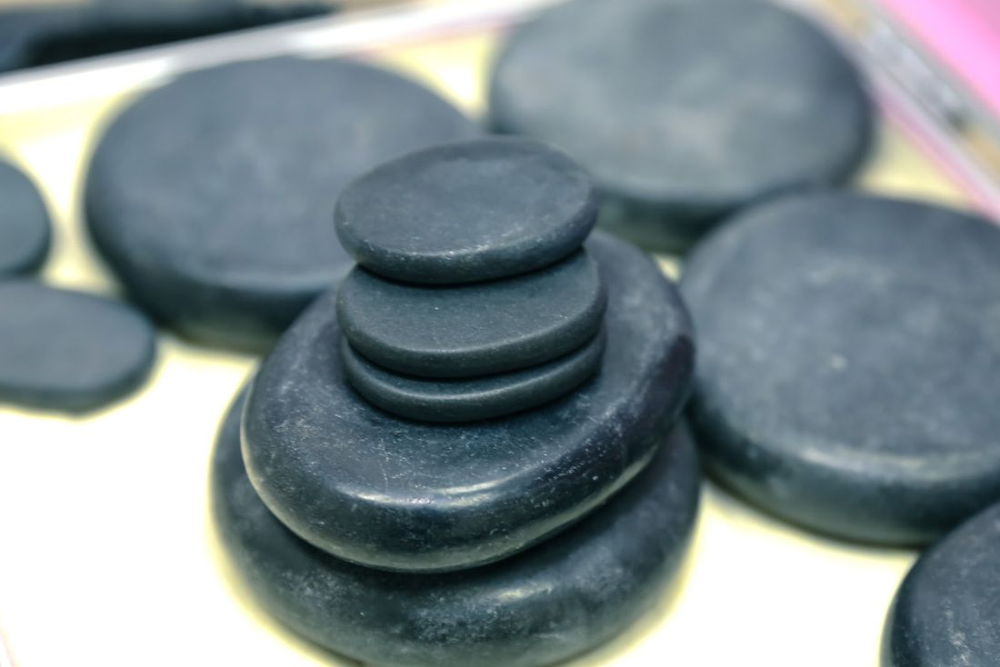
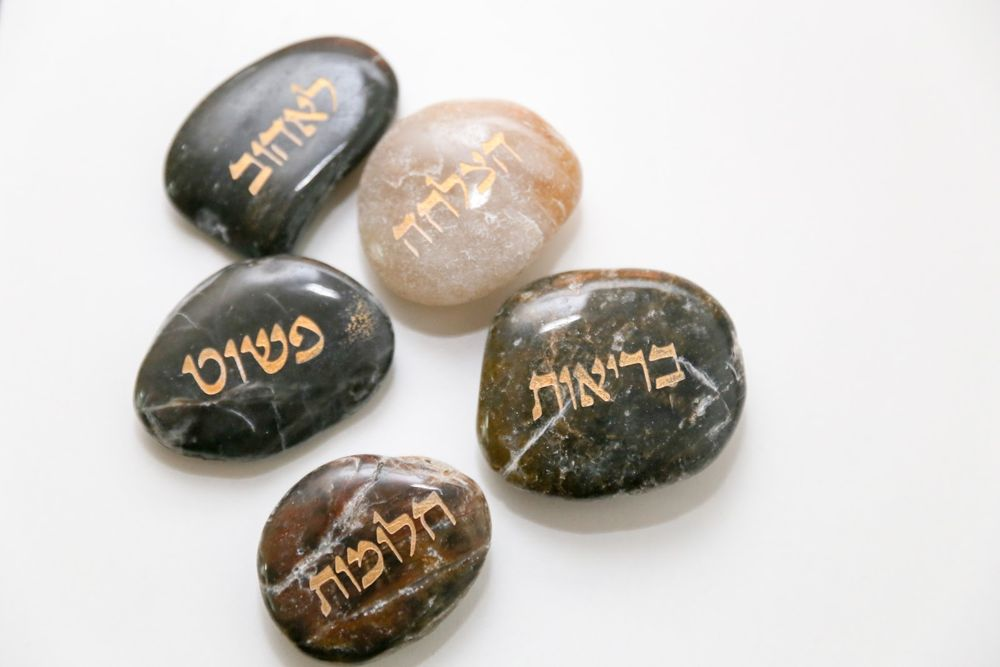
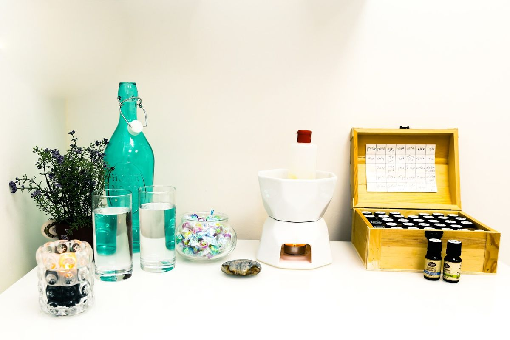
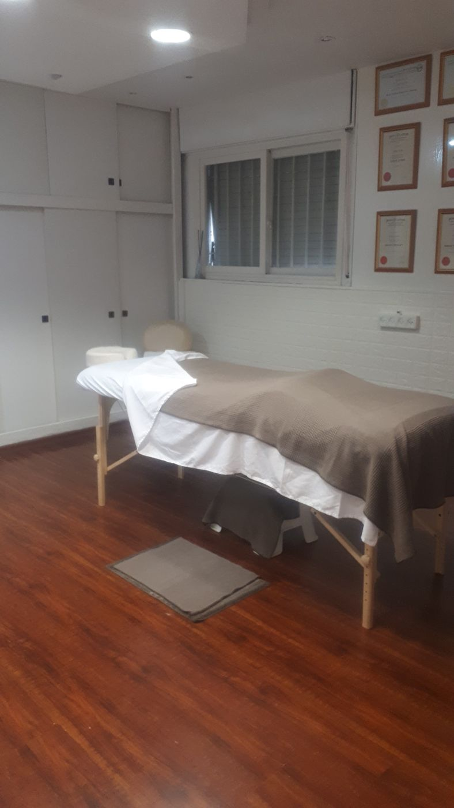
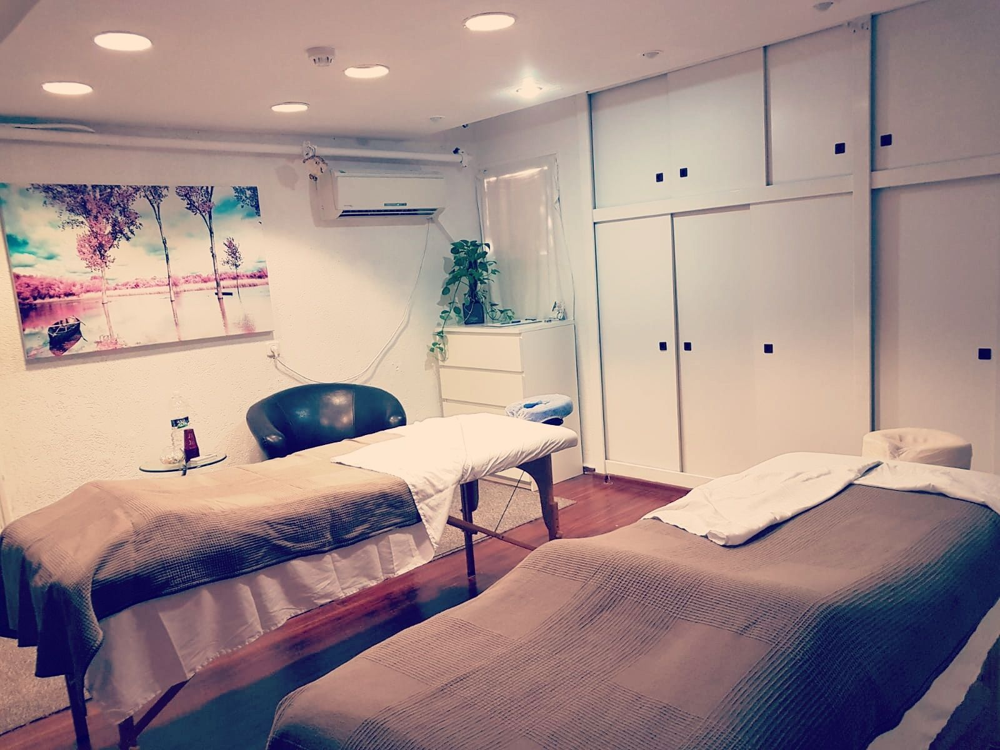

עיסוי ספורטאיםSports massage
לשרירים עמוסים מאימון, מעבודה או מישיבה ארוכה.For muscles loaded by training, work or long hours of sitting.
קונספט לדוגמה שנבנה עבור Sport Therapy & Spa עיסוי ספורטאים וספא · זה אינו האתר הרשמי של העסקA sample concept built for Sport Therapy & Spa · This is not the business’s official website
עיסוי ספורטאים וטיפול בכאבי שרירים, בתוך מבנה פרסונל ג׳ים בקריית מוצקין.Sports massage and muscle-pain treatment, inside the Personal Gym building in Kiryat Motzkin.
שני שולחנות טיפול, אבנים חמות ושמנים ארומטיים.Two treatment tables, hot stones and aromatic oils.





מבנה פרסונל ג׳ים · עלוני נח 3Personal Gym building · 3 Aluney Noah St
עבודה ידנית על השריר, לפי מה שהגוף מספר.Hands-on work on the muscle, guided by what the body tells.
לשרירים עמוסים מאימון, מעבודה או מישיבה ארוכה.For muscles loaded by training, work or long hours of sitting.
אבנים חלקות ומחוממות שמונחות על השריר.Smooth heated stones laid on the muscle.
לבנדר, אקליפטוס ועוד, מתוך התיבה.Lavender, eucalyptus and more, from the box.
כמה מתיחות פשוטות שאפשר לעשות לבד.A few simple stretches to do on your own.
איך לשבת ולעבוד עם פחות עומס על הצוואר והגב.How to sit and work with less load on the neck and back.
5.0
54 ביקורות בגוגלGoogle reviews
מסמנים על הגב, בוחרים עוצמה, וההודעה מוכנה.Mark it on the back, pick a pressure, and the message is ready.
אל: אריאל · Sport TherapyTo: Ariel · Sport Therapy
5.0 בגוגל, מתוך 54 ביקורות.5.0 on Google, from 54 reviews.
מקצוען אמיתי, פרט לעיסוי עצמו שהיה ברמה גבוהה ביותר, נתן כמה טיפים למתיחות פשוטות שהעלימו לי כאבי גב תחתון כרוניים שסבלתי מהם במשך הרבה שנים כתוצאה מעבודה בהייטק, מומלץ בחום
A true professional. Besides the massage itself, which was of the highest level, he gave me a few tips for simple stretches that made the chronic lower-back pain I’d had for many years from working in hi-tech go away. Warmly recommended.
הגעתי לאריאל האלוף עם צוואר תפוס, מעבר לזה שהוא שחרר לי הצוואר הוא גם הסביר לי איך להתנהל בעבודה בצורה נכונה יותר כדי להוריד עומסי מהצוואר והגב, האיש היחיד שיעשה הכל כדי שלא אצטרך לחזור אליו :)
I came to Ariel the champ with a stiff neck. Besides releasing my neck, he also explained how to work in a better way to take the load off my neck and back. The only man who’ll do everything so I won’t need to come back to him :)
מטפל מקצועי ברמות, הסביר לי כל דבר כך שמעבר לטיפול המצוין גם הבנתי איך לטפל בעומסים בעתיד, טיפל בבעיות שלא שמתי לב שיש לי עד לאותו רגע, ועזר לי מאוד, ממליץ מאוד.
A seriously professional therapist. He explained everything, so beyond the excellent treatment I also understood how to handle strain in the future. He treated problems I hadn’t noticed I had until that moment and helped me a lot. Highly recommended.
הטיפול הכי טוב שעשיתי בחיים ! אני סובלת מנזק עצבי עם כאבים ונימול , הגעתי לאריאל שעשה לי טיפול מטורף הוא פשוט מקצועי והבין במדוייק איך לעזור לי. פעם ראשונה מזה שנתיים וחצי שקיבלתי מזור וכלים להקל על מצבי. בנאדם נדיר ואני מאחלת לכולם להגיע אליו
The best treatment I’ve ever had! I suffer from nerve damage with pain and numbness. I came to Ariel, who gave me an amazing treatment; he’s simply professional and understood exactly how to help me. For the first time in two and a half years I got relief and tools to ease my condition. A rare person, and I wish everyone could come to him.
במבנה של פרסונל ג׳ים, ברחוב עלוני נח 3 בקריית מוצקין.In the Personal Gym building, 3 Aluney Noah Street, Kiryat Motzkin.
ראשון עד חמישי 7:30–20:00, שישי 7:30–16:00. בשבת סגור.Sunday to Thursday 7:30–20:00, Friday 7:30–16:00. Closed on Saturday.
אפשר לבקש. לפי הביקורות, אריאל שואל במהלך הטיפול אם לשנות את עוצמת המגע.You can ask. According to the reviews, Ariel checks during the treatment whether to change the pressure.
כן, אבנים חמות ושמנים ארומטיים, כמו שרואים בתמונות מהחדר.Yes, hot stones and aromatic oils, as you can see in the photos from the room.
בתוך מבנה פרסונל ג׳ים.Inside the Personal Gym building.